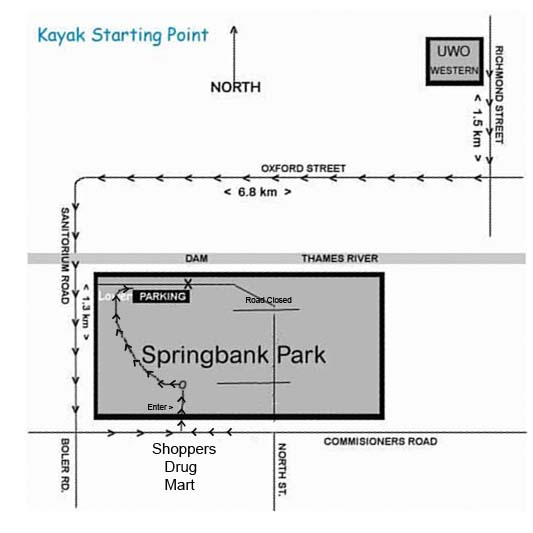

kayak photos, kayak videos, kayak stories, kayak specialties, nova craft canoe, nova craft kayaks, Necky kayaks, kayak accessories, kayak instruction, kayak guides, USHGA member, voodoo kayaks, seaward kayaks, perception kayaks, northwest kayaks, heritage kayaks, ocean kayak, cobra kayaks, islander kayaks, guillemot kayaks, all at skydog kayaks
SKYDOG SPORTS KAYAKS
NOTICE July 24, 2018
Skydog Sports No Longer Offers Kayak Trips
|
Enjoy the Splendour and Excitement of South Western Ontario's Rivers |
Free Online Video Available - Click Here
We have Kayaked many of the rivers near London, Ontario, Canada and would be only to happy to share our experiences with other Kayak enthusiasts and beginners.
" THE THAMES WEST "
One of our favourite trips is the one from Springbank dam here in London heading west to Killworth bridge which is about five miles and usually takes about two hours depending on water levels and how often we stop for photo opportunities. If we want to go a little farther, we can end up at the Komoka bridge which adds another hour onto our trip and then for a lengthy run we can continue to Delaware which usually ends up being a 4-1/2 hour trip.
The most scenic section is the first one which has high cliffs in many areas and about six different rapid sections, the last being the largest at Killworth bridge. We usually encounter many bird species, turtles and if you look closely you will see the occasional fish and for the first time, in 2004 we saw two groups of deer feeding near the water. We usually see a few Blue Herons which sometimes lead the way for us.
This is a very relaxing trip that beginners can feel comfortable with as well as getting the experience of small rapids.
If you look through our photo pages, accessed from our Kayak Main Menu, you will see why we are so excited about what we have to offer on The Thames. It is truly amazing!
Take a Friend and Be Safe
|
 |
|
Follow arrows to parking area - (Launch Area) |
Written driving instructions to our launch site in Springbank Park -
Starting either from Richmond Street or Western Road which turns into Wharncliffe Road continue south until you come to Oxford street, turn right or west and continue 6.8 kilometres to Sanatorium Road, turn left or south and continue over the Thames River bridge keeping to the left 1.3 Km and turn left onto Commissioners Road and travel .2 Km to the first park entrance across from Shoppers Drug Mart, turn left into the park and follow that road left then right down the hill and along the river to the dam parking lot.
|
Personal Training by Our
Knowledgeable Staff Teaching
Strokes and concepts Our Focus is on Safety and Fun |
Kayaking Comments
Hi
Bob,
I was part of the Monday group (Crown School) you took kayaking last week
in London with Neville and Jennifer. Thanks a lot for the experience...it
was lots of fun...especially the rapids!
Harutyun
********************************************
You are Invited to Join our New Yahoo Group
LONDON KAYAK CLUB DIGEST
It's FREE
To Join - Click The link below and send E-mail to -
Subscribe - Kayak-London-Canada-subscribe@yahoogroups.com
**************************************************
LONDON KAYAK CLUB DIGEST
Hello
Kayak enthusiasts:
Southwestern Ontario, Canada is surrounded by some of the most
awesome open water in North America and home to a great many small
lakes and river systems suitable for kayaking.
The purpose of this club is to connect Southwestern Ontario Kayak paddlers,
share tales of our experiences, organize events, learn coastal kayak
navigation, swap tips on gear, and have fun. A great place to plan
Kayak trips and organize group trips. The majestic Thames River runs
directly through London and offers wonderful, scenic Kayak trips. Join
now and share your experiences.
I
am setting up this Yahoo message group so that we will all have a
place to arrange upcoming trips and share our stories of Kayak
experiences. I do hope that you will join us.
This Yahoo group has a section for you to insert photos into and I
have started by inserting a few so please add to the photo section as
soon as you can.
When you join any Yahoo group, you have the option to receive
individual e-mails or a daily list of e-mails in one packet or you
can opt to read the group e-mail on the group website so that you
would never be burdened with having to many e-mails coming in. I
prefer the daily method and that way I only receive one group digest
e-mail each day.
Please give it a try. Moderator - Bob Grant
It's FREE
You are Invited to Join our New Yahoo Group
LONDON KAYAK CLUB DIGEST
To Join - Click The link below and send E-mail to -
Subscribe - Kayak-London-Canada-subscribe@yahoogroups.com
**************************************************
All FREE Kayak Online Videos - Click Here
Cool 30 Minute Kayak DVD Now Shipping Only $9.95
FREE Kayaking Canada Online Video Preview Now Available - Click Here
Nova Craft Kayaks Info Page - Click Here